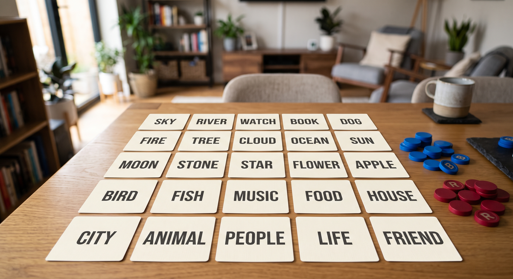
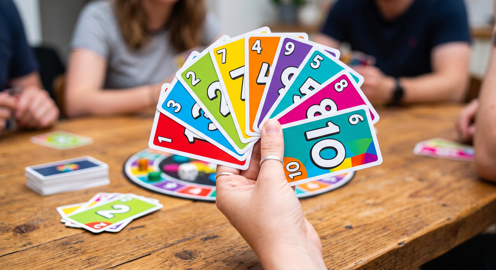
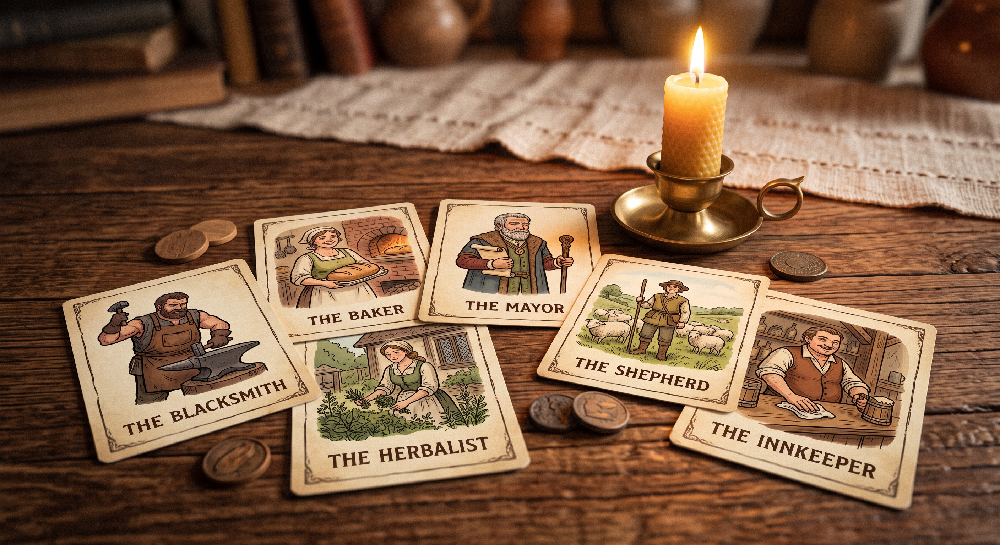

Chess
The full classic ruleset with three difficulty levels for the solo board. Games save themselves, so an unfinished match is still there tomorrow.
Six titles, all included in every pass. Play on your own against the computer, or pass one device around a table with friends.
Each card tells you how many people a game suits and roughly how long a round takes, so you can pick something that fits the time left on your pass. Finishing a round adds cafe points, and those points are spent in the virtual cafe.
The full classic ruleset with three difficulty levels for the solo board. Games save themselves, so an unfinished match is still there tomorrow.

The screen deals a secret role to each person in turn, then runs the night and day phases with a timer. One device is passed around the group.

A grid of twenty-five words and two teams trying to reach their own agents first. The screen keeps the key hidden until the round ends.

Fast colour and number matching with the usual skips, reverses and draw cards. Short enough to fit in the last ten minutes of a pass.

Forty questions across history, music, science, film, sport and one round of deliberately strange facts. Scores are kept on screen.

A village, a few werewolves and a narrator the screen plays for you. Slower and more talkative than Mafia, with extra village roles.
The Play buttons are placeholders in this stage of the project. The games themselves arrive with the JavaScript stage, and the markup on this page is already prepared for them.